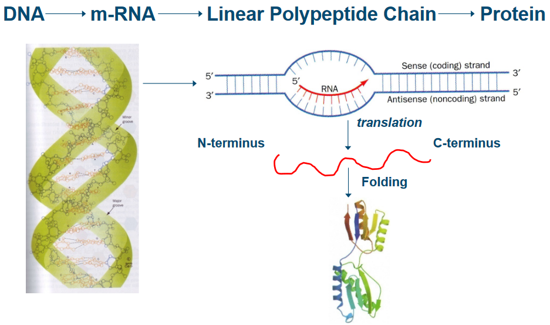
7 Amyloids and TTR
The central dogma is a fundamental principle that describes the flow of genetic information in living organisms. It states that genetic information is transferred from DNA to RNA (transcription) and from RNA to proteins (translation).
7.1 Protein Folding
Let’s dive into a challenging question: How do proteins find their correct shapes? It’s a puzzle that scientists have been trying to solve.
One idea to understand this process is to consider all the possible shapes a protein can take. But here’s where the problem gets interesting, and it’s called the Cyrus Levinthal Paradox, named after the scientist who first described it in 1969.
Imagine a protein with n amino acid building blocks. Each of these amino acids can rotate around two special angles, \(\phi\) and \(\psi\), giving us a total of \(2(n - 1)\) possible angles to consider. And for each of these angles, there are three stable conformations: one called trans and two gauche positions.
Now, if we attempt to explore all the possible conformations that this protein could take, we’d end up with an astronomically large number—around \(10^{(n-1)}\) possible shapes! That’s a mind-boggling amount.
Here’s the catch: if a protein could try out a new shape every \(10^{-13}\) seconds (which is the rate at which single bonds reorient), it would take an incredibly long time to test all these possibilities. For instance, if we consider a protein with just 100 amino acids, it would take roughly \(10^{86}\) seconds. To put that into perspective, the universe is around 20 billion years old, or about \(6 \times 10^{17}\) seconds. So, the time required for a protein to explore all its possible shapes would be greater than the apparent age of the universe itself!
This paradox tells us that proteins don’t search through all their possible shapes one by one. Instead, they seem to have a much faster and more efficient way of finding their correct, functional shapes. In fact, proteins in living organisms, like E. coli, can grow and fold into their shapes in mere minutes, which is a fascinating and efficient feat that continues to captivate scientists.
7.1.1 Anfinsen’s Experiment
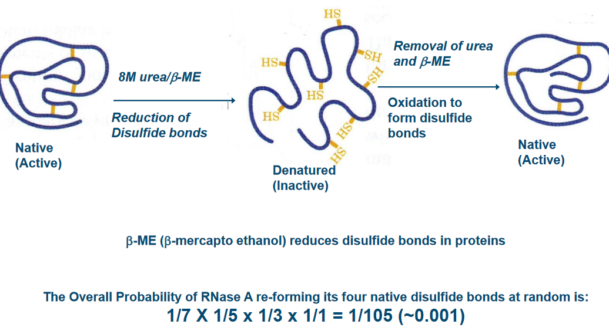
In this Anfinsen’s experiment, scientists discovered that proteins have a remarkable ability to fold themselves into their natural shapes, all on their own, under normal, everyday conditions found in living organisms. It’s like a magic trick that happens inside our bodies.
What’s even more mind-blowing is that the sequence of amino acids, which are like the building blocks of proteins, contains all the instructions needed to define the protein’s 3D structure. In simpler terms, the order of these amino acids acts like a blueprint for the protein’s final shape and, consequently, its job in the body.
This discovery shed light on the fact that there are no mysterious, magical factors needed for proteins to fold correctly. Everything they need is right there in their genetic code. It’s like saying, “You have all the tools you need; now, go do your job.” This insight was groundbreaking and has deepened our understanding of how proteins function in our bodies.
7.1.2 Funnel-Shaped Energy Landscape
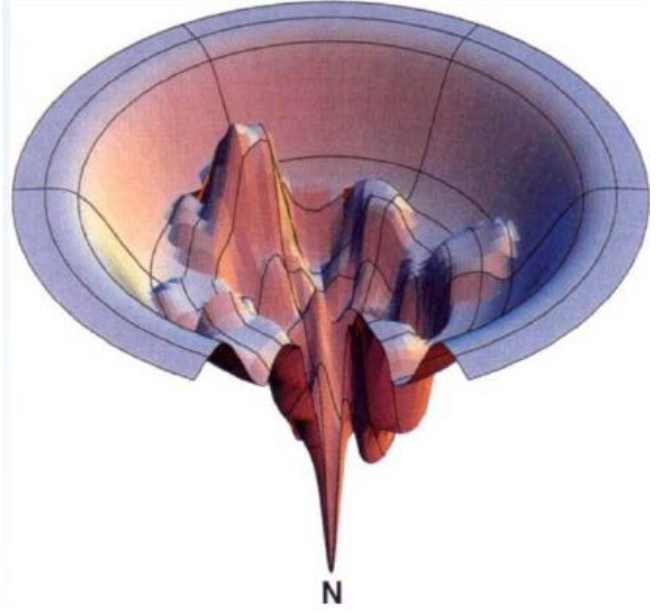
Proteins start off with lots of potential shapes, like different paths down the sides of the funnel. But they all want to reach the same ultimate goal: their native state, a specific, energetically stable shape.
Now, here’s where the action begins. In a refolding experiment, proteins have to make choices along the way. Think of these choices like deciding which route to take down the funnel. The key is to avoid getting stuck in local minima, which are like little pits or traps in the landscape. Proteins have to pick the smoothest, most energy-efficient path that leads them to their stable, native shape.
7.1.3 In Vivo Folding
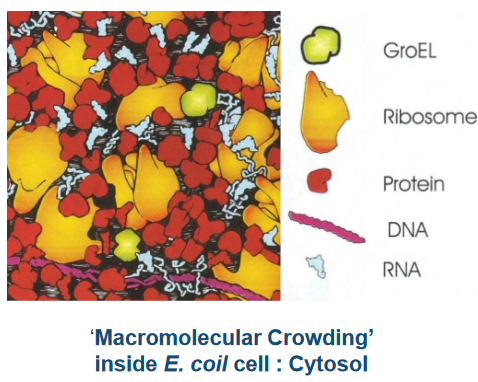
The thing about protein folding in cells is that the process occurs in super cramped spaces.
7.1.3.1 In Bacteria
Inside the cell, there’s a bit of a competition going on. The newborn protein, called a nascent chain, needs to find its way to the right shape. But sometimes, it can get distracted and form unproductive associations with other big molecules, like a player getting mixed up in the wrong team.
This is where the group of proteins, known as Molecular Chaperones, steps in. They’re like the experienced guides who know the perfect trails to follow. Some of these chaperones have names like DnaK, DnaJ, GroEL, GroES, and Trigger Factor. They act as helpers, making sure the nascent chain takes the right path and doesn’t get lost in the bustling cell.
These chaperones are like the heroes of protein folding, ensuring that the competition for productive folding doesn’t end in chaos. They guide the nascent chain to its correct, functional shape, making sure the protein is ready to do its job in the cell. It’s a remarkable teamwork process inside the microscopic world of bacteria.
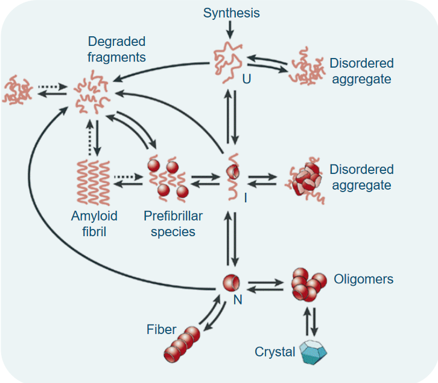
When a protein is made, it can go into one of several shapes.
7.1.4 Protein Quality Control in Cells
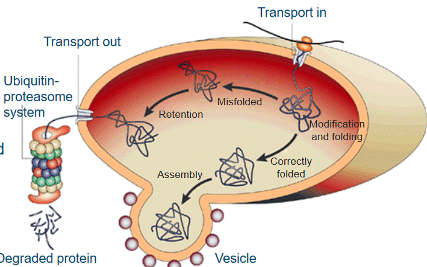
When new proteins are made, they’re like raw materials that need some work. So, these freshly synthesized protein chains are sent to a place in the cell called the endoplasmic reticulum (ER). Here, they get a bit of a makeover, with modifications like glycosylation, and they’re also given a hand to fold into their proper, three-dimensional shape. This is where special proteins called molecular chaperones come into play. Think of them as the cell’s fashion designers, helping proteins look their best.
Now, proteins that are correctly folded and ready for action get a one-way ticket to the Golgi complex. They’re wrapped up in membranes, kind of like a gift in a box, and delivered to where they’re needed in the cell.
But, here’s where the plot thickens. If a protein is poorly folded or just not up to par, a quality control system springs into action. It detects these “problematic” proteins and decides they need more work. These proteins are not allowed to leave the ER but are sent down another path called the unfolded protein response. Here, they face a system that acts like a recycling center, using a process called ubiquitin-proteasome to break down and dispose of the proteins that didn’t quite make the cut.
7.2 Amyloids
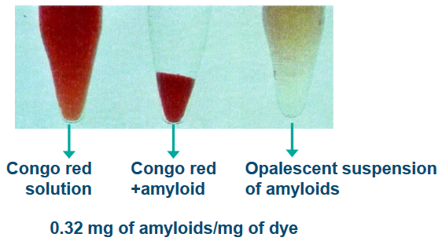
The term amyloids was coined by a scientist called Virchow because these substances could be found in certain abnormal tissues in the human body. What’s interesting is that when you add iodine and sulfuric acid to these tissues, they change color. It’s kind of like a chemical reaction that makes these tissues stain a certain way. This staining is similar to what happens in plants with something called starch.
Another distinctive trait of amyloids is that they can bind to certain dyes, like Congo Red (CR), Thioflavin T (ThT), and Thioflavin S (ThS). It’s like they have a special affinity for these dyes, which can help scientists identify them. There’s also a protein called the serum amyloid P component (SAP) that’s associated with amyloids.
7.2.1 Physical Characteristics of Amyloids
Amyloids are like the rebels of the biological world because they’re insoluble under normal conditions inside a living organism. Imagine trying to dissolve a pebble in water; it just won’t work. However, under specific conditions with low ionic strength (a measure of salt concentration), they become a bit more cooperative, forming a gel-like suspension.
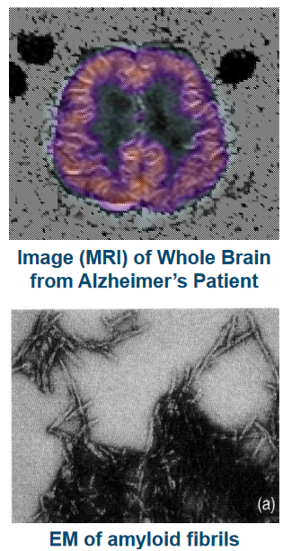
When amyloids deposit in the body, they don’t just sit there on their own. They’re like precious gems embedded within a rock, surrounded by other tissue components.
What makes amyloids truly unique is their structure. They form long, non-branching fibrils, like tiny threads, that are about 7.5 to 10 nanometers in diameter and can be quite long, ranging from 3,000 to 100,000 nanometers. These fibrils aren’t solo actors; they develop from several intermediates or proto-fibrils, which have a special arrangement called cross \(\beta\)-sheet structures.
Amyloids are also known for their ability to trigger other substances to adopt the same misfolded structure, like a domino effect. This is called seeding and cross-seeding. It’s like one misfolded protein convincing others to join the misfolded club.
In addition, amyloids are tough cookies. They’re resistant to being broken down by enzymes, a process called proteolysis, and they can withstand harsh conditions without losing their structure.
7.2.2 Amyloid Folding in vivo
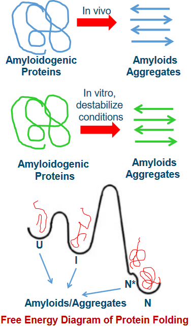
One of the intriguing aspects of amyloid formation is that it can happen from both folded and unfolded precursor proteins. Imagine you have pieces of a puzzle, some neatly arranged, and some all mixed up. Both can lead to the creation of the final picture.
Now, think of these precursor proteins as having different states. There’s the unfolded state (U), the intermediate state (I), and the native, or folded, state (N). These states are like different stages in solving the puzzle, from scattered pieces to a completed picture.
What’s really interesting is that moving from one state to another isn’t as simple as just changing your mind. There’s a high energy barrier, like a big hill, that separates these states. Climbing this hill is tough work, and it’s not easy for the protein to transition from U to I or N.
Under normal, physiological conditions, the native state (N) is the most stable and commonly populated state. It’s like the preferred arrangement of puzzle pieces. However, there’s another state, N*, which can exist as a result of the protein’s natural wiggles and jiggles, known as thermal fluctuations. This transition has a lower energy barrier, making it easier for the protein to explore different conformations, similar to how a puzzle piece might shift slightly as you’re working on it.
7.2.2.1 Steps in Amyloid Folding
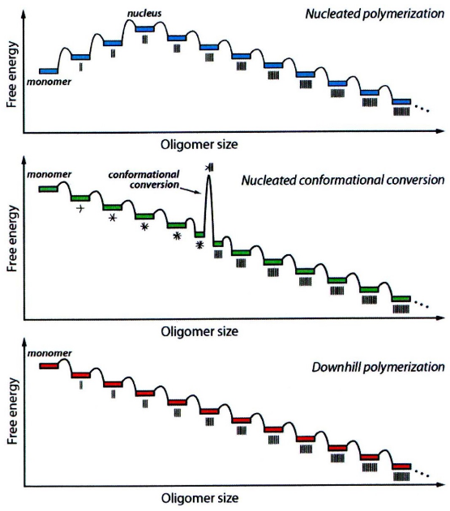
At the start, when proteins begin to associate with each other, it’s not an easy task. The initial association events are unfavorable, like trying to bring together pieces of a puzzle that don’t quite fit. However, at some point, something special happens. We reach a critical size, often referred to as the nucleus. Once this nucleus is formed, further protein associations become much more favorable. It’s like finally finding the right piece of the puzzle that helps you build the rest of it effortlessly.
Now, there’s another scenario where the initial association events are actually favorable. Here, proteins come together and form amorphous aggregates, often referred to as oligomers. These are like the starting points, but they’re not yet in their final, structured form. However, some of these oligomers of a certain size undergo conformational changes. It’s like pieces of the puzzle adjusting and snapping into place. These changes lead to the formation of amyloid seed fibrils, which then serve as the basis for more associations.
In a different scenario, once the initial association events are favorable, it’s like the puzzle pieces fitting well right from the beginning. After the formation of the amyloidogenic monomer (a protein unit that’s ready for amyloid formation), the association steps become highly favorable, and there’s a low energy barrier. It’s like finding the right puzzle piece right away and smoothly connecting it to the rest of the puzzle.
7.2.3 Amyloid Diseases in a Nutshell
First and foremost, aging is a major risk factor for both sporadic (not inherited) and inherited amyloid diseases. It’s like the clock is ticking, and as we get older, our risk of developing these diseases increases. One reason for this is that aging can lead to deficiencies in stress-responsive signaling, essentially disrupting the cell’s ability to manage protein balance, which is called proteostasis. When protein balance is compromised, tissues that can’t easily regenerate are particularly vulnerable.
Now, let’s talk about mutations in amyloidogenic proteins. While not every amyloid disease is directly caused by mutations, they often play a role. Think of these mutations as puzzle pieces that make the puzzle-solving process more challenging. Mutations within these proteins can make them more prone to forming amyloids. They do this by destabilizing the normal, non-amyloidogenic state of the protein, pushing it towards partially folded states. In these partially folded states, certain amino acids become exposed and are more likely to trigger the formation of amyloids. This speeds up the process of tissue degeneration, especially in tissues that can’t renew themselves after damage.
7.3 Transthyretin (i.e., TTR) Amyloidoses
TTR, or transthyretin, is a blood protein that we can find in our bloodstream at a concentration of about 5 μM. This protein has a couple of important jobs. It transports retinol binding protein, which carries retinol, a form of vitamin A. TTR is like a reliable courier for these essential nutrients.
But that’s not all. TTR also plays a role in carrying thyroxine (T4) in the blood of rodents, although its significance in humans is a bit different.
In terms of its structure, TTR is made up of 127 amino acids, and it forms a tetramer under normal physiological conditions. This means it exists as a group of four TTR molecules bound together. In this form, it can carry two units of retinol binding protein. It’s like a teamwork arrangement, with each TTR tetramer carrying these valuable cargo units.
However, sometimes things don’t go as planned. TTR can undergo misfolding outside of cells, and it assembles into various aggregated structures. These assemblies aren’t normal and lead to degenerative diseases. It’s like TTR taking a wrong turn and ending up causing trouble instead of smoothly transporting its cargo.
7.3.1 Structure of TTR
Let’s explore the structure of transthyretin (TTR), the protein we just talked about. TTR’s structure is like a beautifully organized team, and understanding it can give us insights into how it functions.
TTR forms a tetramer, which is a group of four TTR molecules that join together. Picture it like a tight-knit squad working together. This tetramer structure is folded in a way that features β-sheet structures, which are like specific patterns that the protein follows. Within this tetramer, there are four interfaces, or interaction points, among the subunits, keeping the team together.
Now, TTR isn’t just hanging out on its own; it has a very important job of carrying thyroxine (T4) in the bloodstream. To do this, TTR interacts with T4 using specific amino acids, namely Glu54 and Lys15. It’s like a carefully choreographed dance where TTR and T4 engage in a precise partnership.
Within TTR, there’s a special spot called the T4 binding pocket. This pocket is both hydrophobic, meaning it repels water, and it has three pairs of hydrophobic regions. These regions are often referred to as the halogen binding pocket (HBP) because they are occupied by iodine atoms of T4. It’s like TTR’s way of securely holding T4 in place.
7.3.2 TTR Diseases
First, TTR amyloid diseases can be linked to changes or mutations in the TTR gene. In fact, more than 100 different point mutations have been identified. These mutations can be like a twist in the puzzle, making it more complex. But here’s the intriguing part: even the normal, or wild-type (WT), TTR can be involved in amyloid-related conditions. It’s not just about the mutations.
When TTR amyloids deposit, they can be found both outside and within heart muscle cells, specifically cardiomyocytes. This deposition leads to a condition known as senile systemic amyloidosis (SAA), which affects around 15% of men older than 80 and even some as young as 60. It’s like an unexpected challenge in the puzzle of aging.
Now, the mutated forms of TTR are even more puzzling. These mutations can lead to various conditions, including familial amyloid polyneuropathy (FAP), familial amyloid cardiomyopathy (FAC), and central nervous system-selective amyloidoses (CNSA). It’s like having different versions of the puzzle, each with its unique set of challenges.
Here’s the twist: mutant TTR proteins are often heterozygous, meaning they contain a mix of subunits from the normal, or wild-type, TTR and the mutant TTR. This mixture creates a unique environment that can lead to the early formation of amyloids in these conditions.
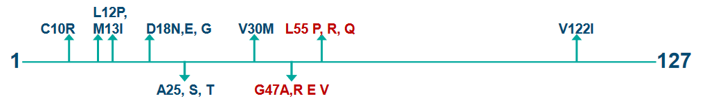
In L55P FAP, the onset of symptoms happens at a relatively early age, at around 20 years. It’s like the condition knocks on the door of the affected individuals when they’re young.
On the other hand, there’s V30M FAP, which presents slightly later. In the Portuguese population, symptoms of V30M FAP typically become noticeable around the age of 30 years. It’s like this form of FAP chooses to reveal itself a bit later in life.
These variations in the timing of symptom onset highlight the diversity and complexity of FAP. Understanding when and how different forms of the disease appear is crucial for diagnosis and management. It’s like piecing together a puzzle where the timing of symptom onset is one of the key pieces to consider.
7.3.3 Mechanism of Formation for TTR
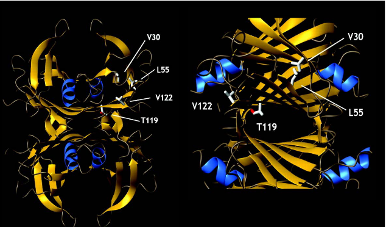
TTR is known for its tetrameric structure, which means it’s made up of four TTR molecules that come together. In this puzzle, the location of point mutations is crucial. These mutations influence the protein’s amyloidogenicity, or its ability to form amyloids, and also impact the type of disease that develops. It’s like specific pieces of the puzzle that significantly affect the final picture.
One of the key mutations, V30M TTR, is located right in the hydrophobic core of the protein. This core is like the central part of the puzzle, and the V30M mutation directly impacts it. Another mutation, L55P, is found in a specific beta-strand of the protein. This strand is like one of the patterned pieces that makes up the overall puzzle.
The V122I mutation, on the other hand, is close to the C terminus, which is like the end part of the puzzle, and it’s also located at the dimer-dimer interface, where two parts of the tetramer meet. This mutation can significantly affect the interaction between these subunits.
And then there’s the T119M mutation, which is involved in stabilizing the quaternary structure, the overall arrangement of the tetramer. It’s like the glue that holds the pieces of the puzzle together. This mutation not only stabilizes the structure but also slows down the rate at which the tetramer falls apart.
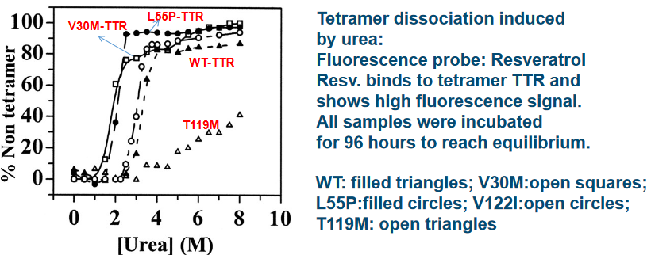
First, we have the V30M and L55P variants of TTR, and they share a characteristic: they are less stable in their tetrameric states. It’s like these variants have some wobbly pieces, and the tetramer structure isn’t as secure as it should be. This reduced stability is a key factor in their amyloidogenicity, or their tendency to form amyloids.
On the other hand, there’s the V122I TTR variant and the wild-type (WT) TTR. These two have a similar level of stability when it comes to their tetrameric states. It’s like they have strong, well-fitted puzzle pieces that keep their tetramer structures intact.
Now, here’s the twist: the T119M variant of TTR is even more stable than the WT TTR. This is quite surprising because it’s like finding a puzzle piece that’s even more secure and robust than the original. This increased stability is particularly intriguing and could play a role in its unique properties.
What’s perplexing about this puzzle of stability is that V30M and L55P, as well as V122I and WT TTR, show similar levels of stability despite being different variants. It’s like having two different-looking puzzle pieces that surprisingly fit together perfectly.
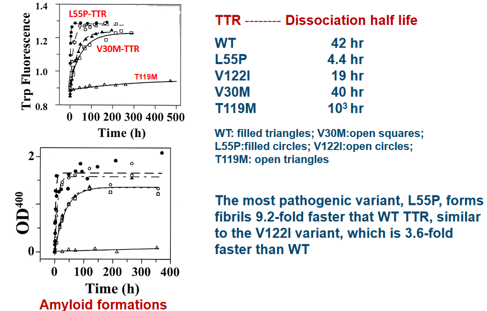
Experimental data suggests that the L55P variant of TTR is the likeliest to cause disease. This variant folds 9.2 times faster than normal (i.e., wild type) TTR. Another variant to note is the V22I variant - this one folds about 3.6 times faster than wild type TTR.
7.3.4 Disassociation Pathways
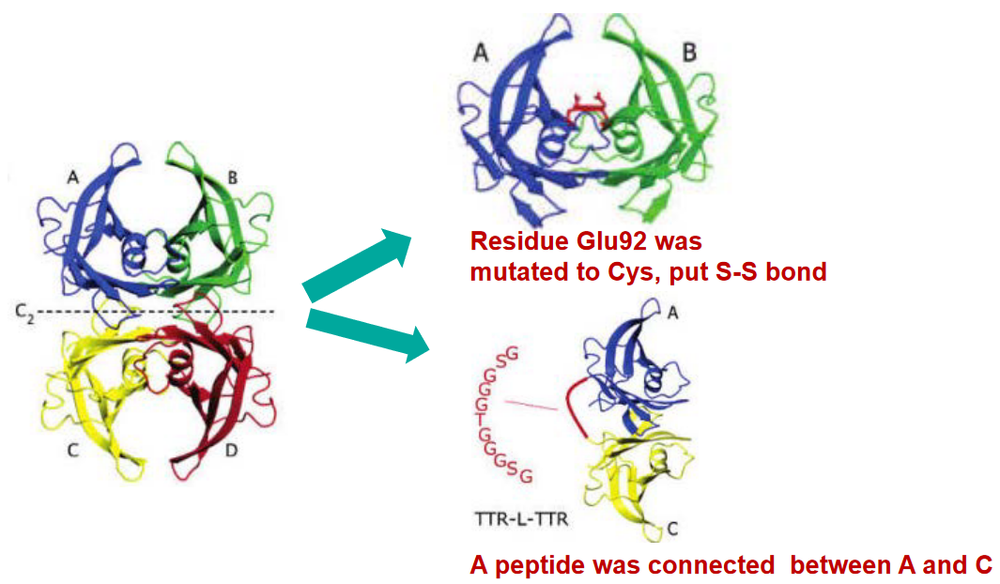
7.3.5 Stability of TTR
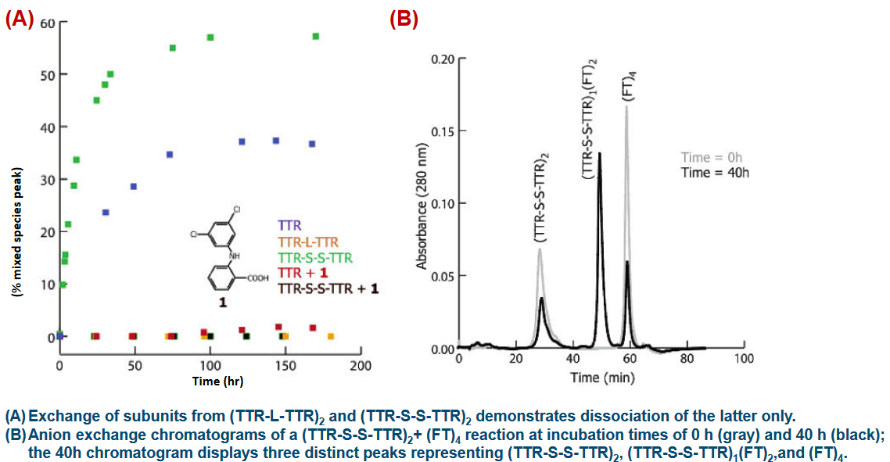
First things first, for TTR to turn into amyloids, it needs to go through a specific process. The initial step, which is often the slowest and rate-limiting, is the dissociation of the TTR tetramer. Imagine this as the moment when the four members of the tetramer go their separate ways, breaking apart from their close-knit group.
Once this dissociation occurs, it sets the stage for the next phase of the cascade. The natively folded monomer, which is the individual unit of TTR in its normal, well-structured state, must undergo partial denaturation. Think of this as the monomer starting to lose its usual shape and structure, becoming “competent” to misassemble into various aggregate forms.
These aggregates can take the form of oligomers, which are like smaller clusters, or they can evolve into the distinctive amyloid fibrils. It’s like the monomers going through a transformation, and depending on the conditions, they can become different types of structures, just like Lego pieces that can be assembled in various ways.
Now, here’s the interesting part: certain molecules, like thyroxine (T4), can stabilize the TTR tetramer. This stabilization prevents amyloidogenesis, which is the process of amyloid formation. It’s like T4 acting as a shield, making sure the tetramer stays intact and doesn’t break apart to start the cascade.
7.3.5.1 Experimental Data
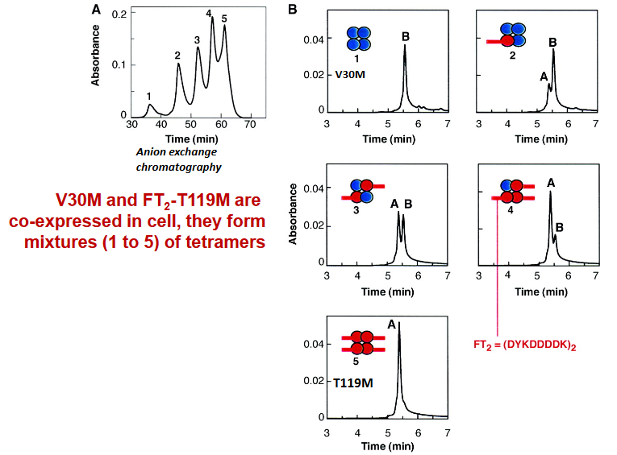
A Portugueses family were found to have the V30M variant of TTR - a variant that can readily cause diseases in one of their alleles and the T119M variant in another allele (which is responsible for suppressing diseases).
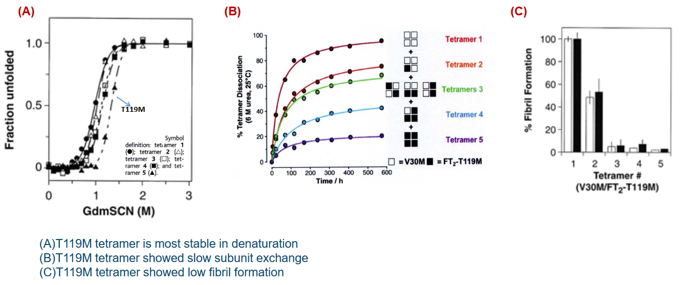
7.4 TTR Drug Design and Discovery
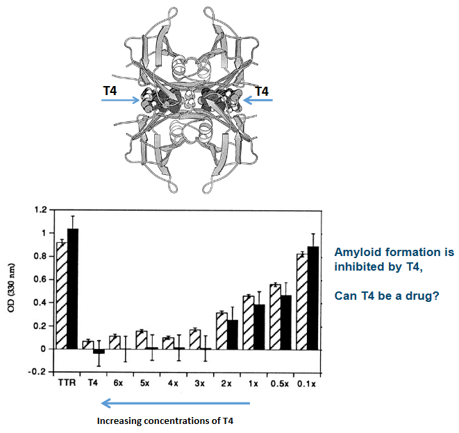
First, TTR has a unique ability to bind to two T4 hormone molecules at the dimer interface. Imagine this as a special receptor on TTR that can hold onto two T4 molecules simultaneously. It’s like TTR is acting as a double-handed catcher for T4.
In our bloodstream, approximately 20-25% of the T4 is bound to TTR. The remaining 75% of T4 is bound to a different protein called globulin. This division of labor ensures that T4 is efficiently carried through the bloodstream. It’s like a team effort with both TTR and globulin playing a crucial role in transporting T4.
Now, here’s where things get really interesting. When T4 binds to TTR, it has a unique effect. It reduces the dissociation of the TTR tetramer. In other words, it helps TTR stay together in its four-part structure. This is like a stabilizing force that ensures TTR doesn’t break apart easily.
What’s particularly exciting is that the T4 binding sites on TTR are utilized in the design and discovery of drug molecules. Scientists leverage these sites to create drugs that can interact with TTR, either by mimicking the effects of T4 or by interfering with TTR’s functions. It’s like using the same key to unlock different doors in a complex building.
7.4.1 Challenges Regarding TTR Drugs
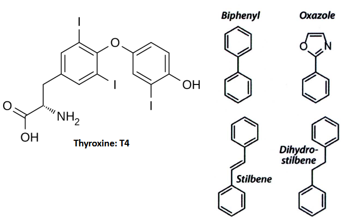
Developing drugs for TTR-related conditions is no simple task. One of the primary challenges is specificity. In our blood plasma, there are over 4000 different proteins, making it a crowded environment. Additionally, albumin, another protein in plasma, has a tendency to bind with many small molecules. So, any drug targeting TTR must be specific and not mistakenly interact with other proteins or receptors in the bloodstream. It’s like trying to single out one particular individual in a crowded room.
Another critical consideration is that these drugs must not interfere with thyroid receptors. Thyroxine (T4), the thyroid hormone, plays a vital role in our bodies, and drugs targeting TTR should not disrupt its function.
Now, when it comes to designing drugs to prevent amyloid formation in TTR, scientists typically focus on small molecule ligands. These ligands often consist of two aromatic rings. These rings can be linked directly to each other (known as a biaryl) or separated by linkers of varying chemical structures. It’s like combining two important puzzle pieces.
Here’s where it gets interesting: one of these aromatic rings is usually modified with a polar substituent, which means it has a part that’s attracted to water. The other ring often features halogenated substituents, alkyl groups, or sometimes a combination of these. It’s like having a special tool with a unique handle and head for a specific job.
This specific design and structure of small molecule TTR ligands are crucial for their effectiveness in preventing amyloid formation. They act like keys that fit into TTR’s locks, stopping it from forming harmful amyloid structures.
7.4.2 Bivalent Drug Inhibitors
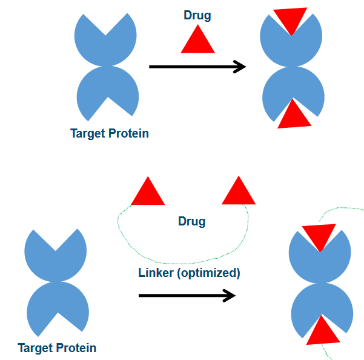
Monovalent drug binding is like a handshake; it’s a bit more casual. In this approach, drugs have a weaker affinity for their target proteins. This means they are not as tightly bound and have a higher degree of freedom, similar to having more room to move around. However, this flexibility comes with a trade-off. Since the binding is weaker, drugs can be more easily displaced from the binding site, which is like letting go of the handshake.
On the other hand, bivalent drug binding is more like a firm, unbreakable handshake. Here, drugs are linked together by a ‘rigid’ chemical linker. This linker can even have interactions with the proteins themselves. As a result, the affinity, or the strength of the bond, is much stronger. Drugs in a bivalent binding scenario have less degree of freedom, which means they are less likely to be displaced from the binding site. It’s like having a handshake that you can’t easily let go of.
7.4.2.1 Bivalent Inhibitors
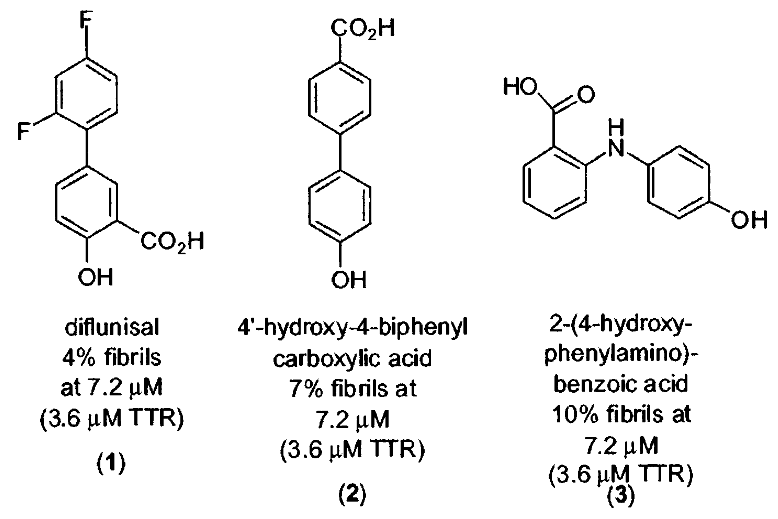
The thing about bivalent inhibitors is that their structures are linked through their phenol groups.
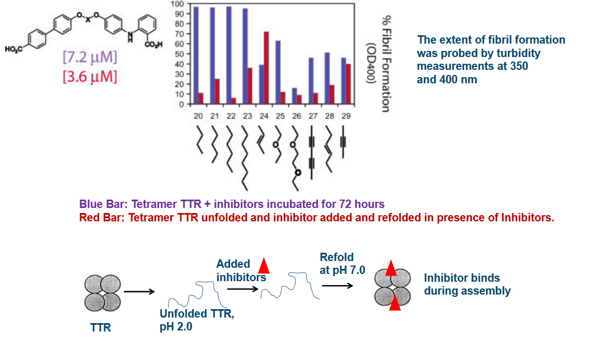
7.4.3 Clinical Trials
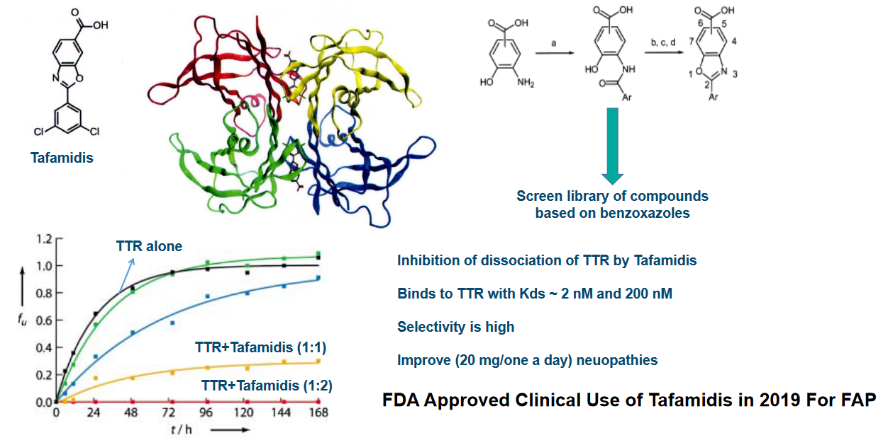
The first drug, Diflunisal, is a derivative of salicylic acid and has properties that make it an analgesic (pain reliever) and anti-inflammatory agent. However, it’s also a cyclooxygenase inhibitor, which can potentially pose problems for TTR cardiomyopathy patients by impairing blood flow. It’s like a double-edged sword with both benefits and potential drawbacks.
Diflunisal’s interaction with TTR is unique. It binds to TTR with negative cooperativity, which means that it has two binding constants (Kd1 and Kd2). The first binding constant (Kd1) is relatively strong at 75 nM, while the second one (Kd2) is weaker at 1100 nM. This dual interaction is like a handshake that starts strong and then loosens up a bit.
While these drugs have only modest binding affinity to TTR and low selectivity among plasma proteins, they have some crucial advantages. They have high oral bioavailability, which means they can be taken by mouth and still effectively reach the bloodstream. Once in the bloodstream, they maintain high concentrations, which is like ensuring a steady supply of soldiers to guard against potential threats.
The most exciting part is that these drugs have the ability to stabilize TTR and inhibit amyloid formation. It’s like having bodyguards that not only protect but also prevent trouble from happening in the first place.